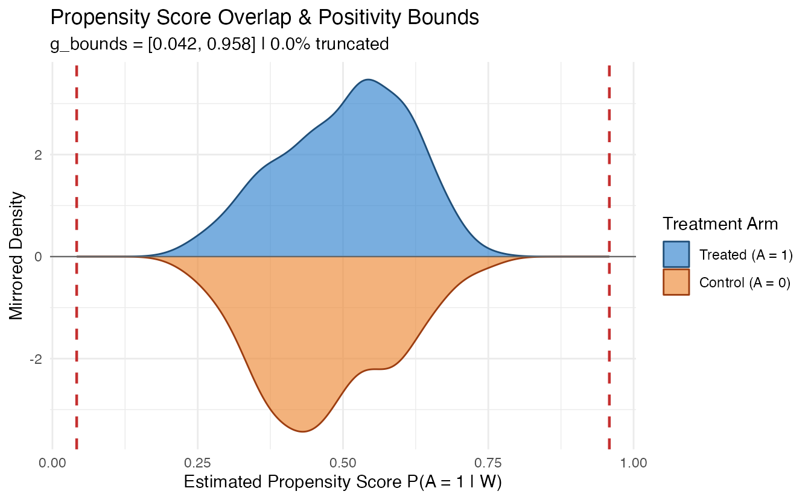

Targeted Maximum Likelihood Estimation (TMLE) has a reputation for
heavy semiparametric notation, yet its core idea is remarkably
down-to-earth. Drawing on the classic tutorials by Schuler & Rose
(2017), Luque-Fernandez et al. (2018), and van der Laan & Rubin
(2006), this guide walks through why TMLE exists,
how its five steps map directly to columns inside
tidytmle, and how its built-in guardrails
protect your inference.
1. Why Prediction Alone (and Weighting Alone) Fall Short
Suppose we want the Average Treatment Effect (ATE) of a treatment on an outcome , adjusting for confounders :
Applied researchers typically reach for one of two single-model strategies:
| Strategy | What It Estimates | Why It Can Go Wrong |
|---|---|---|
| G-Computation (Outcome Regression) | Machine learning minimizes global prediction error across , not the bias-variance trade-off for the causal contrast . Residual confounding bias shrinks too slowly for valid 95% confidence intervals. | |
| Inverse Probability Weighting (IPTW) | Propensity score | Does not optimize outcome fit directly and can blow up in variance if a handful of observations have propensity scores near or (positivity violations). |
| Targeted MLE (TMLE) | Both and , then fluctuates | Combines flexible ML prediction with a targeted bias-removal step. Doubly robust (consistent if either or is right) and locally efficient (smallest asymptotic variance). |
The Two-Word Philosophy: “Predict, Then Target.” First use cross-validated machine learning (Super Learner) to predict outcomes as accurately as possible. Then give those initial predictions a gentle, mathematically targeted nudge—just enough to wipe out residual confounding bias for your causal estimand, without overfitting the rest of the curve.
2. The 5-Step TMLE Recipe Mapped Directly to
tidytmle
Let’s fit a standard 5-fold CV-TMLE on a simulated cohort with known
ground truth so we can watch every single step inside
augment(fit) and glance(fit):
library(tidytmle)
cohort <- sim_causal_cohort(n = 400, outcome_type = "continuous", seed = 42)
truth <- attr(cohort, "truth")
fit <- tmle_spec(
outcome = y,
treatment = a,
covariates = c(age, sex, starts_with("lab_")),
estimand = "ate"
) |>
set_resamples(v_folds = 5L) |>
fit(data = cohort)
fit
#>
#> ── TMLE Fit Summary ──
#>
#> n = 400 (observed = 400) | 5-fold CV-TMLE | logistic fluctuation |
#> 1.84s
#>
#> ── Causal Estimates
#> ATE est = 1.6586 (SE = 0.1325) 95% CI [1.3988, 1.9184] p = < 0.0001
#>
#> ── Nuisance Super Learners
#> Q Super Learner: R2 = 0.714 (weights: ranger 0.55, glm 0.45)
#> g Super Learner: AUC = 0.600 (weights: glmnet 0.33, glm 0.33, ranger
#> 0.33)
#>
#> ── Diagnostics & Targeting Shift
#> Targeting shift (TMLE - plug-in): +0.1724 (epsilon = 0.0323)
#> ✔ All checks healthy: mean EIF = 1.57e-14, truncated = 0.0%, max EIF leverage = 6.7%.Here is what just happened under the hood, step by step:
Step 1: Initial Outcome Surface ()
Cross-validated Super Learner workflows predict each person’s
counterfactual outcome under treatment (.q1_init) and
control (.q0_init). Averaging
.q1_init - .q0_init gives the untargeted
G-computation plug-in estimate.
Step 2: Propensity Score () & Overlap
A separate classification Super Learner models
(.g_hat) strictly excluding treatment
from predictors, then applies adaptive positivity bounds to produce
.g_trunc.
autoplot(fit, type = "overlap")
Step 3: The “Clever Covariate” ()
How do we know which initial predictions need a nudge? TMLE
builds a Clever Covariate (.clever_h)
derived directly from the Efficient Influence Function (EIF):
Look at the geometry: individuals in areas where their received
treatment was surprising (small
when
,
or small
when
)
receive a larger
.
The Clever Covariate forces the targeting step to pay extra attention to
the exact regions of covariate space where confounding bias hides.
Step 4: The Fluctuation Step ()
Holding the initial predictions fixed as an offset
on the logit scale (after scaling continuous
into
),
TMLE fits a simple 1-parameter logistic regression on
:
- If the initial ML model already eliminated confounding bias,
and predictions barely move. - Otherwise,
shifts .q1_init -> .q1_star and
.q0_init -> .q0_star strictly along the path that zeroes
out the causal estimating equation.
autoplot(fit, type = "targeting")
Inspecting the decoded columns inside augment(fit) and
glance(fit) makes all five steps concrete:
aug <- augment(fit)
head(aug[, c("a", "y", ".q0_init", ".q1_init", ".g_trunc", ".clever_h", ".q0_star", ".q1_star", ".eif")])
#> # A tibble: 6 × 9
#> a y .q0_init .q1_init .g_trunc .clever_h .q0_star .q1_star
#> <int> <dbl> <dbl> <dbl> <dbl> <dbl> <dbl> <dbl>
#> 1 1 5.74 3.91 5.35 0.654 1.53 3.82 5.43
#> 2 0 1.74 2.30 3.94 0.362 -1.57 2.21 4.03
#> 3 0 3.12 4.10 5.82 0.516 -2.06 4.01 5.90
#> 4 0 2.84 3.77 5.62 0.381 -1.61 3.67 5.70
#> 5 0 -0.504 1.99 3.25 0.403 -1.67 1.90 3.34
#> 6 0 3.18 3.67 5.14 0.384 -1.62 3.58 5.22
#> # ℹ 1 more variable: .eif <dbl>
glance(fit)[, c("epsilon", "mean_eif", "plugin_vs_tmle_shift", "pct_truncated", "ess_treated", "ess_control")]
#> # A tibble: 1 × 6
#> epsilon mean_eif plugin_vs_tmle_shift pct_truncated ess_treated
#> <dbl> <dbl> <dbl> <dbl> <dbl>
#> 1 0.0323 1.57e-14 0.172 0 181.
#> # ℹ 1 more variable: ess_control <dbl>Step 5: Substitution Estimate & EIF Standard Errors
Finally, TMLE averages the fluctuated counterfactuals
and computes valid asymptotic standard errors directly from the variance
of the Efficient Influence Function
(.eif). Look how mean_eif is numerically zero
()—confirming
the EIF score equation
is solved!
3. Seeing Double Robustness Live
One of TMLE’s most celebrated guarantees is double robustness: even if your outcome model is badly misspecified (say, an intercept-only null model!), a flexible propensity learner still rescues the causal estimate via the fluctuation step—and vice versa.
Let’s verify this directly by pairing an intentionally
misspecified constant-only outcome learner
(.formula = y ~ 1 simulated via null_model())
with tidytmle’s default Super Learner for
:
library(parsnip)
#> Warning: package 'parsnip' was built under R version 4.5.2
fit_bad_q <- tmle_spec(
outcome = y,
treatment = a,
covariates = c(age, sex, starts_with("lab_"))
) |>
set_outcome_learners(null_model(mode = "regression") |> set_engine("parsnip")) |>
set_resamples(v_folds = 5L) |>
fit(data = cohort)
tibble::tibble(
Scenario = c("True ATE", "Misspecified Q (Plug-in G-comp)", "Misspecified Q -> Rescued by TMLE"),
Estimate = c(
truth$true_ate,
mean(augment(fit_bad_q)$.q1_init - augment(fit_bad_q)$.q0_init),
tidy(fit_bad_q)$estimate
),
SE = c(NA, NA, tidy(fit_bad_q)$std.error)
)
#> # A tibble: 3 × 3
#> Scenario Estimate SE
#> <chr> <dbl> <dbl>
#> 1 True ATE 1.52 NA
#> 2 Misspecified Q (Plug-in G-comp) 0 NA
#> 3 Misspecified Q -> Rescued by TMLE 1.66 0.212Notice that the untargeted plug-in G-computation estimate from the
null outcome model is 0 (completely wrong!), whereas TMLE’s
fluctuation step (plugin_vs_tmle_shift) uses
and the Clever Covariate to pull the estimate right back onto the true
ATE!
4. Why tidytmle’s Guardrails Matter
Applied papers repeatedly highlight three pitfalls that break naive
TMLE implementations in practice. tidytmle enables defenses
for all three automatically:
-
Cross-Validated TMLE (
cv_tmle = TRUE, Zheng & van der Laan, 2011): Flexible tree/boosting learners routinely violate classical Donsker class smoothness assumptions, causing in-sample TMLE standard errors to be anti-conservative (CIs too narrow). Out-of-fold cross-fitting viarsamplerestores valid asymptotic normality without restricting your learner library. -
Bounded Canonical Logistic Fluctuation
(
fluctuation = "logistic", Gruber & van der Laan, 2010): Linear fluctuations on unbounded outcomes can overshoot into impossible values under confounding. Scaling continuous into , running the canonical logistic submodel, and transforming back guarantees counterfactual predictions remain inside the observed outcome range. -
Adaptive Positivity Truncation
(
g_bounds = "adaptive", Petersen et al., 2012): Rather than clipping propensities at a rigid0.025regardless of sample size,tidytmledefaults to the -aware rule (bounded to[0.01, 0.15]), reportspct_truncatedand Kish effective sample sizes (ess_treated,ess_control), and lets you run an instant positivity sensitivity sweep viaretarget()orautoplot(fit, type = "sensitivity").
5. Annotated Literature Guide
If you want to dive deeper into the theory implemented across
tidytmle, these are the foundational and tutorial papers to
start with:
- Schuler, M. S., & Rose, S. (2017). Targeted maximum likelihood estimation for causal inference in observational studies. American Journal of Epidemiology, 185(1), 65–73. — The clearest conceptual roadmap for epidemiologists and applied data scientists.
- Luque-Fernandez, M. A., Schomaker, M., Rachet, B., & Schnitzer, M. E. (2018). Targeted maximum likelihood estimation for a binary treatment: A tutorial. Statistics in Medicine, 37(16), 2530–2546. — Step-by-step worked numerical tutorial with Clever Covariate and fluctuation walkthroughs.
- van der Laan, M. J., & Rubin, D. (2006). Targeted maximum likelihood learning. The International Journal of Biostatistics, 2(1). — Original paper introducing TMLE.
- Gruber, S., & van der Laan, M. J. (2010). A targeted maximum likelihood estimator of a causal effect on a bounded continuous outcome. The International Journal of Biostatistics, 6(1). — Foundation for bounded logistic fluctuation on continuous outcomes.
- Zheng, W., & van der Laan, M. J. (2011). Cross-validated targeted minimum-loss-based estimation. In Targeted Learning, Springer. — Theoretical proof showing CV-TMLE removes Donsker restrictions.
- Petersen, M. L., Porter, K. E., Gruber, S., Wang, Y., & van der Laan, M. J. (2012). Diagnosing and responding to violations in the positivity assumption. Statistical Methods in Medical Research, 21(1), 31–54. — Basis for overlap diagnostics and positivity truncation rules.
-
Díaz, I., Williams, N., Hoffman, K. L., & Schenck, E. J.
(2021). Nonparametric causal effects based on longitudinal
modified treatment policies. JASA, 118(542), 846–857. — Foundation
for
shift()andscale_tx()continuous-exposure density-ratio TMLE. -
Kennedy, E. H. (2023). Towards optimal doubly
robust estimation of heterogeneous causal effects. Electronic
Journal of Statistics, 17(2), 3008–3049. — Foundation for
fit_cate()DR-Learner pseudo-outcome regression.